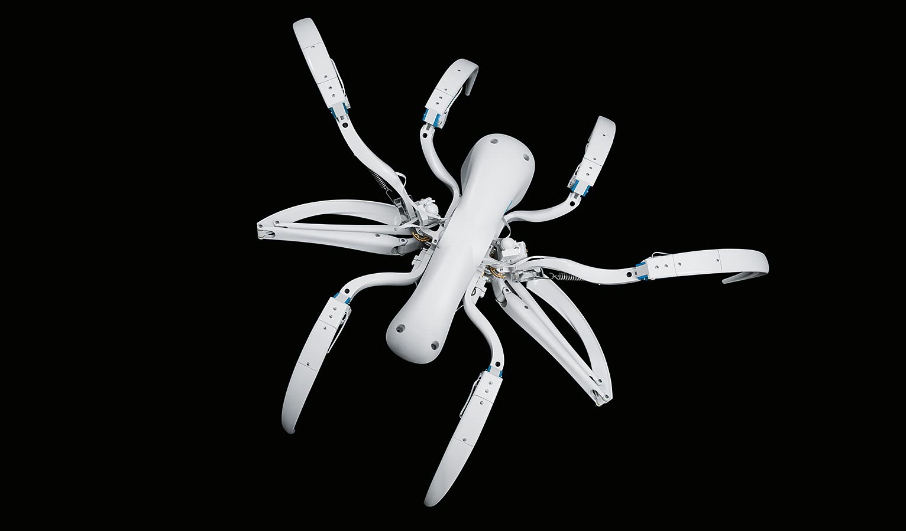

BionicWheelBot
Laufen und Rollen wie die Radlerspinne
Neue Antriebskonzepte und verblüffende Bewegungsformen spielen seit jeher eine wichtige Rolle in unserem Bionic Learning Network. Mit dem BionicWheelBot ist dabei ein Laufroboter mit ganz speziellen Eigenschaften entstanden, der von der Radlerspinne inspiriert ist.

Biologisches Vorbild für den BionicWheelBot ist die Radlerspinne (Cebrennus rechenbergi). Sie lebt in der Wüste Erg Chebbi am Rande der Sahara. Dort hat sie Prof. Ingo Rechenberg, Bionik-Professor an der TU Berlin, im Jahr 2008 entdeckt. Die Radlerspinne kann wie andere Spinnen laufen. Sie kann sich aber auch mit einem kombinierten Ablauf aus Flug- und Bodenrolle fortbewegen.
Die Radlerspinne: perfekt auf den Lebensraum eingestellt
Damit passt sie sich optimal an ihre Umgebung an: Auf ebenem Untergrund ist sie im so genannten Rollmodus doppelt so schnell wie beim Laufen. Wo es uneben ist, sind dagegen einzelne Schritte von Vorteil. So kann sie sich in der Wüste – wo beide Geländeformen zu finden sind – sicher und effizient bewegen.

Seit er die Spinne entdeckt hat, befasst sich Prof. Rechenberg mit dem technischen Übertrag ihrer Bewegungsmuster. Die Studien zum Verhalten der Spinne führten zur Konstruktion verschiedener Roboter, die sich auf schwierigem Gelände fortbewegen können. Für den BionicWheelBot hat der Berliner Wissenschaftler die Kinematik und das Antriebskonzept nun gemeinsam mit unserem Bionik-Team weiterentwickelt.

Der BionicWheelBot: Transformation beim Wechsel vom Lauf- in den Rollmodus
Um ins Rollen zu kommen, formt der BionicWheelBot links und rechts von seinem Körper jeweils drei Beine zu einem Rad. Zwei beim Laufen eingeklappten Beine fahren nun aus, stoßen die zusammengekugelte Spinne vom Boden ab und schiebe sie während des Rollens permanent an. So verhindern sie, dass der BionicWheelBot stecken bleibt und sorgen dafür, dass er sich auch in unwegsamem Gelände fortbewegen kann. Im Rollmodus ist die künstliche Spinne – wie ihr natürliches Vorbild – wesentlich schneller als beim Laufen. Dabei kann der Roboter sogar Steigungen bis zu fünf Prozent bergauf bewältigen.